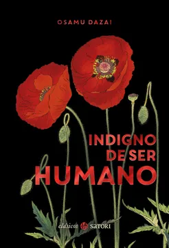

¿Por qué lo es?
Es mi libro favorito porque relata como una persona que no se siente digna de ser un humano, que no comprende a los demás, muestra de una perspectiva diferente las realidades de la sociedad, los comportamientos y demás.



Es mi libro favorito porque relata como una persona que no se siente digna de ser un humano, que no comprende a los demás, muestra de una perspectiva diferente las realidades de la sociedad, los comportamientos y demás.